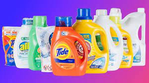

Home About Price Contact

Vegetables are parts of plants that are consumed by humans or other animals as food. The original meaning is still commonly used and is applied to plants collectively to refer to all edible plant matter, including the flowers, fruits, stems, leaves, roots, and seeds. An alternate definition of the term is applied somewhat arbitrarily, often by culinary and cultural tradition. It may exclude foods derived from some plants that are fruits, flowers, nuts, and cereal grains, but include savoury fruits such as tomatoes and courgettes, flowers such as broccoli, and seeds such as pulses.
Books are referred to as a man’s best friend. They are very beneficial for
mankind and have helped it evolve.
There is a powerhouse of information and knowledge.
Books offer us so many things without asking for anything in
return. Books leave a deep impact on us and are responsible for
uplifting our mood.This is why we suggest children read books
from an early age to gain knowledge. The best part about books
is that there are various types of books. One can read any type
to gain different types of knowledge. Reading must be done by
people of all ages. It not only widens our thinking but also
enhances our vocabulary.
Perfume is a mixture of fragrant essential oils or aroma compounds, fixatives and solvents, usually in liquid form, used to give the human body, animals, food, objects, and living-spaces an agreeable scent.[1] The 1939 Nobel Laureate for Chemistry, Leopold Ružička stated in 1945 that "right from the earliest days of scientific chemistry up to the present time perfumes have substantially contributed to the development of organic chemistry as regards methods, systematic classification, and theory.Ancient texts and archaeological excavations show the use of perfumes in some of the earliest human civilizations. Modern perfumery began in the late 19th century with the commercial synthesis of aroma compounds such as vanillin or coumarin, which allowed for the composition of perfumes with smells previously unattainable solely from natural aromatics.

A detergent is a surfactant or a mixture of surfactants with cleansing properties in dilute solutions.These substances are usually alkylbenzene sulfonates, a family of compounds that are similar to soap but are more soluble in hard water, because the polar sulfonate (of detergents) is less likely than the polar carboxylate (of soap) to bind to calcium and other ions found in hard water.In domestic contexts, the term detergent by itself refers specifically to laundry detergent or dish detergent, as opposed to hand soap or other types of cleaning agents. Detergents are commonly available as powders or concentrated solutions. Detergents, like soaps, work because they are amphiphilic: partly hydrophilic (polar) and partly hydrophobic (non-polar). Their dual nature facilitates the mixture of hydrophobic compounds (like oil and grease) with water. Because air is not hydrophilic, detergents are also foaming agents to varying degrees.
A detergent is a surfactant or a mixture of surfactants with cleansing properties in dilute solutions.These substances are usually alkylbenzene sulfonates, a family of compounds that are similar to soap but are more soluble in hard water, because the polar sulfonate (of detergents) is less likely than the polar carboxylate (of soap) to bind to calcium and other ions found in hard water.In domestic contexts, the term detergent by itself refers specifically to laundry detergent or dish detergent, as opposed to hand soap or other types of cleaning agents. Detergents are commonly available as powders or concentrated solutions. Detergents, like soaps, work because they are amphiphilic: partly hydrophilic (polar) and partly hydrophobic (non-polar). Their dual nature facilitates the mixture of hydrophobic compounds (like oil and grease) with water. Because air is not hydrophilic, detergents are also foaming agents to varying degrees.